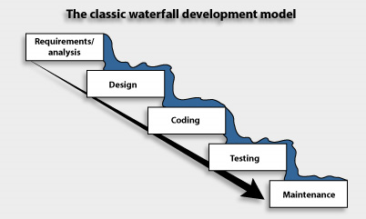

Entry 4
Indigenous Futurism
In software development there’s two main “lifecycles” for code creation: Waterfall software development and Agile Software Development.


In the Waterfall software development lifecycle, software is created in a very linear fashion and there’s like no going back to the different stages of the waterfall development cycle even if perhaps you really should. It’s very fixed, very unforgiving, and very rigid. The Agile software lifecycle, on the other hand, is cyclical, and you enter each stage of the development cycle multiple times throughout the project’s lifecycle. I’ve taken at least four different classes on the software development lifecycles, and I’ve TA’d a few, so it’s no surprise to me that my first thought upon reading about the Native Slipstream was to liken it and the European view of time to Agile and Waterfall, respectively.
For Europeans, time is said to be "imagined as an arrow, hurtling violently away from the past, piercing through the present, rushing towards a myopically conceived future.” This violent imagery is not unlike a torrent of water falling under the relentless force of gravity into a pool, as the Waterfall development cycle is imagined. And while time is not exactly cyclic in the native slipstream, the past, present and future are said to coexist and influence one another, and that is very similar to Agile software development.
When I made this connection between my two worlds it was a lightbulb moment, and I was able to understand the Native slipstream better, in a deeper way.
And like, I had a hard week, and I remember I was listening to music outside in my backyard after class on Monday listening to the following song and that gave me some peace and hope. And I figured it was relevant; waterfall, fallingwater... Native slipstream, water, hope.
Entry 4, Part 2
Contact Zones and Sport
Though I acknowledge that sport has very deep roots in colonialism, for me sport has also provided opportunities associated with postcolonial efforts. That’s to say, sport for me was a contact zone for people from wide walks of life.
For context, let me state that I went to a Catholic High School in the South end of Guelph. Now, I wouldn’t go so far as to say Guelph has a ton of cultural diversity and Catholic school most certainly doesn't help with that matter. Plus, my school was close to both the suburbs and the hundreds of multi-million-dollar homes in Arkell and Puslinch, making for a school that is predominantly middle-class, upper-middle class, and upper-class white Catholics.
As if Catholic schooling wasn’t enough, I even played basketball with the Catholic Youth Organization, so my circles were especially wanting of diversity. But during the summer between 8th grade and high school I went to basketball camp because I wanted to improve my game so I could make the high school team. (Which I did!) At camp I first real interactions with BIPOC and non-Catholic basketball players, and during that week basketball became a contact zone, a commonality between many extremely diverse people, and in the end, I learned a lot more than just basketball.
Furthermore, during my final years of high school two diversity-inspiring changes occurred. The first was that my school began offering the IB program, and the second was that it hosted some sort of provincial women’s basketball team (this was probably because of IB, and because we were a good basketball school). Because of this basketball team though, I had classmates who were African Canadian, classmates who were Middle Eastern, and classmates who weren’t even Catholic! What’s more, I distinctly remember that these people provided a richness in perspective that was extremely beneficial to our in-class discussions as they challenged me and my classmate’s very similar view of the world.